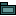
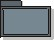

Artifacts >
Artifacts >
 Analysis & Design Artifact Set >
Analysis & Design Artifact Set >
 Design Model... >
Design Model... >

Design Subsystem
 Artifacts >
Analysis & Design Artifact Set >
Design Model... >
Artifact:
| |||||||||||||||||||||||||||||||||||||||
|
 Design Subsystem |
A model element which has the semantics of a package (it can contain other model elements) and a class (it has behavior). The behavior of the subsystem is provided by classes or other subsystems it contains. A subsystem realizes one or more interfaces, which define the behavior it can perform. |
| UML representation: | Subsystem |
| Role: | Designer |
| Optionality: | Optional for simple systems composed only of classes and packages. |
| Reports: | |
| More information: | |
| Input to Activities: | Output from Activities: |
Design Subsystems are used to encapsulate behavior inside a "package" which is provides explicit and formal interfaces, and which (by convention) does not expose any of its internal contents. It is used as a unit of behavior in the system, which provides the ability to completely encapsulate the interactions of a number of class and/or subsystems. The 'encapsulation' ability of design subsystems is contrasted by that of the Artifact: Design Package, which does not realize interfaces, and may expose contents which are marked 'public'. Packages are used primarily for configuration management and model organization, where subsystems provide additional behavioral semantics.
|
Property Name |
Brief Description |
UML Representation |
| Name | The name of the subsystem | attribute |
| Brief Description | The short description of the role and purpose, or the "theme" of the subsystem. | attribute |
| Interfaces | associations to realized interfaces | realization association |
| Contents | aggregation associations to contained model elements | aggregation association |
| Dependencies | dependency associations to interfaces or packages on which the subsystem depends | dependency |
| Diagrams | Any diagrams local to the subsystem, such as class diagrams or statechart diagrams. | Owned by an enclosing package, via the aggregation "owns". |
The Design Subsystem is created during Elaboration Phase, as major functionality is partitioned into 'chunks' which can be developed.
A Designer is responsible for the integrity of the design subsystem, ensuring that:
Design subsystems are useful in several contexts:
|
Rational Unified
Process
|